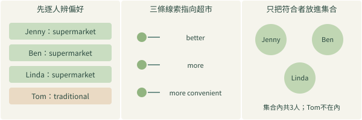
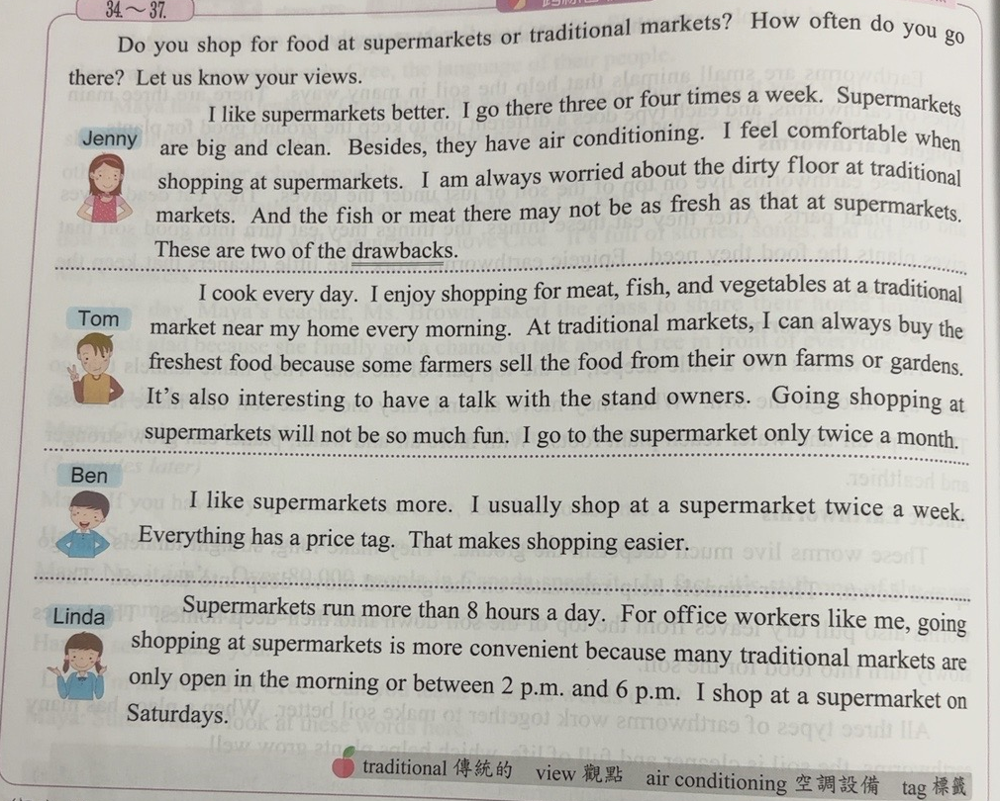
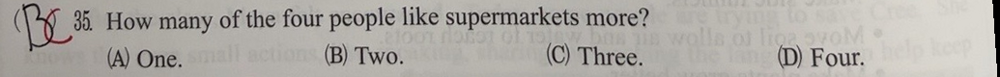
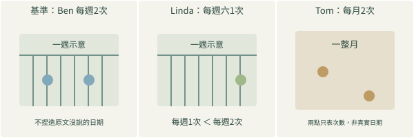
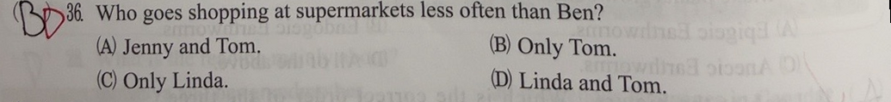

完整原題
作答所需文章／材料
Do you shop for food at supermarkets or traditional markets? How often do you go there? Let us know your views. Jenny I like supermarkets better. I go there three or four times a week. Supermarkets are big and clean. Besides, they have air conditioning. I feel comfortable when shopping at supermarkets. I am always worried about the dirty floor at traditional markets. And the fish or meat there may not be as fresh as that at supermarkets. These are two of the drawbacks. Tom I cook every day. I enjoy shopping for meat, fish, and vegetables at a traditional market near my home every morning. At traditional markets, I can always buy the freshest food because some farmers sell the food from their own farms or gardens. It's also interesting to have a talk with the stand owners. Going shopping at supermarkets will not be so much fun. I go to the supermarket only twice a month. Ben I like supermarkets more. I usually shop at a supermarket twice a week. Everything has a price tag. That makes shopping easier. Linda Supermarkets run more than 8 hours a day. For office workers like me, going shopping at supermarkets is more convenient because many traditional markets are only open in the morning or between 2 p.m. and 6 p.m. I shop at a supermarket on Saturdays. 字詞：traditional 傳統的；view 觀點；air conditioning 空調設備；tag 標籤。英文第35題｜購物偏好的人數
英文第36題｜購物頻率與比較基準
先想一想，再查看答案、解說與原圖
英文第35題｜購物偏好的人數
分享原卷｜第35題 · 首次出題日期 2026-10-29 · 原AI對話 ↗
逐項解析
| 選項與原句 | 判讀 | 句意與判斷理由 |
|---|---|---|
| (A) One. | 不選 | 只算一人會漏掉其他等義偏好線索。 |
| (B) Two. | 不選 | 只算明說like的兩人，會漏掉Linda較方便的說明。 |
| (C) Three. | 應選 | Jenny、Ben、Linda，共三人。 |
| (D) Four. | 不選 | Tom偏好傳統市場，不能四人全算進去。 |
詳細說明與解題步驟
逐人判斷偏好，不只數直接出現more的人。Jenny說like supermarkets better；Ben說like supermarkets more；Linda說超市對自己較方便，並在週六去超市。三人偏好超市。Tom喜歡每天到傳統市場買菜、與攤商聊天，超市一個月才去兩次，因此不算在偏好超市的人中。共三人，選C。比較級better、more及more convenient都能提供偏好線索，不能把不同說法漏算。

① 四個人，不是四人都選同一處
Jenny、Ben、Linda偏好超市；Tom比較喜歡傳統市場。名單示意逐人分類，不用生成圖片的人頭數當答案。
② 不同說法，也能表達偏好
Jenny的better、Ben的more、Linda的more convenient都是線索。Linda說超市對上班族較方便，不能因沒用like就漏算她。
③ 只有集合中的三人符合
把Jenny、Ben、Linda放進偏好超市的集合，Tom排除，總共三人，選C。Tom有去超市，不代表他比較喜歡超市。
④ 逐人核對偏好，再數符合者
答案 C：Three.
- Jenny、Ben、Linda，共三人。
- better／more／more convenient都要讀到。
- 有去超市，不等於比較喜歡超市。
核對註記：已實看原卷本題、完整四選項及閱讀材料；原問以外的小題不收入。
原圖（僅本題）


英文第36題｜購物頻率與比較基準
分享原卷｜第36題 · 首次出題日期 2026-10-29 · 原AI對話 ↗
逐項解析
| 選項與原句 | 判讀 | 句意與判斷理由 |
|---|---|---|
| (A) Jenny and Tom. | 不選 | Jenny每週三、四次，比Ben多，所以此組錯。 |
| (B) Only Tom. | 不選 | Tom符合，但少算Linda。 |
| (C) Only Linda. | 不選 | Linda符合，但少算Tom。 |
| (D) Linda and Tom. | 應選 | Linda每週一次、Tom每月兩次，都比Ben每週兩次少。 |
詳細說明與解題步驟
比較基準是Ben：每週去超市兩次。Jenny每週三、四次，比Ben多；Linda固定週六去，一般每週一次，比Ben少；Tom每月僅兩次，也比Ben每週兩次少。所以Linda和Tom都符合，選D。每週兩次與每月兩次，數字同為two但期間不同，頻率不能視為相同；Linda的星期六也要轉成每週一次來比較。

① 比較基準是Ben每週兩次
先圈Ben的twice a week；後面每一個人都要與這個頻率比。示意日曆兩點只表示次數，不新增他實際購物的星期幾。
② Linda週六去，一般每週一次
on Saturdays表示通常每逢週六去超市，等於本題所需的每週一次，比Ben每週兩次少。因此不能只選Tom。
③ Tom是每月兩次，期間不同
Tom的twice a month與Ben的twice a week雖然都有two，但期間不同；Tom也較少。Jenny每週三、四次反而較多，故選D。
④ 頻率要比期間，Linda和Tom都較少
答案 D：Linda and Tom.
- Ben：每週2次。
- Linda：每週1次；Tom：每月2次。
- Jenny每週3～4次，不屬於較少者。
核對註記：已實看原卷本題、完整四選項及閱讀材料；原問以外的小題不收入。
原圖（僅本題）
